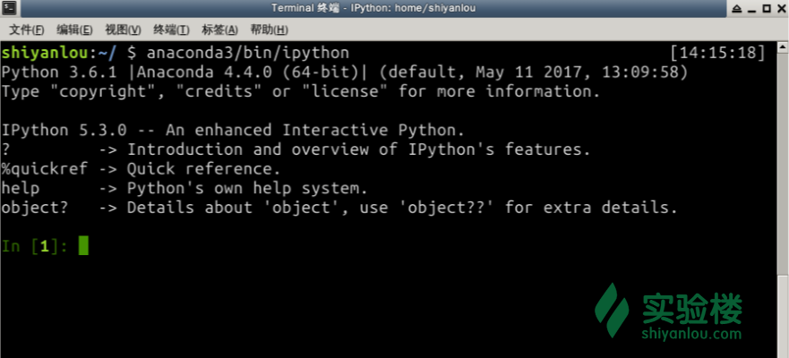

本实验为实验楼训练营课程 《Python 数据分析入门与进阶》的第二节，在该章节中我们将学习 NumPy 和 Pandas 数据分析包。
本节内容包含大量的示例代码，在学习过程中尽量将这些代码编写一遍，这样才能真正掌握 NumPy 和 Pandas 的基础知识。
数据分析的基础是数据，原始数据应该在计算机中会以某种数据结构进行存储，后续的分析操作都是在基于这些数据结构进行的。比较容易能想到，我们分析的数据大多都是数据都是二维的，有行和列之分，这样的数据刚开始可能存储在 Excel 或者 数据库表之中。那么在 Python 中有没有什么软件包可以很方便的处理这种二维数据或者更多维的数据呢？ 那就是 NumPy !
NumPy 提供了对多维数组（矩阵）的高效支持，同时还有以下优点：
NumPy 本身没有提供高级的数据分析功能，但理解 NumPy 数组以及面向数组的各种计算有助于更加高效使用其他数据分析工具。
NumPy 的核心是多维数组，是通过 ndarray对象做到的，ndarray 对象是一个灵活的数据容器，可以基于此容器对数据进行各种运算。
下面我们开始尝试创建一个多维数组，首先打开桌面上的终端，输入命令进入 IPython 终端，如下图所示： 
接着，通过以下命令创建数组:
In [1]: import numpy as np
In [2]: a1 = np.array([1, 2, 3, 4])
In [3]: a1.shape
Out[3]: (4,)
In [4]: a1.size
Out[4]: 4
In [5]: a1.dtype
Out[5]: dtype('int64')
In [6]: a2 = np.array([[1.0, 2.5, 3], [0.5, 4, 9]])
In [7]: a2.shape
Out[7]: (2, 3)
In [8]: a2.size
Out[8]: 6
In [9]: a2.min()
Out[9]: 0.5
In [10]: a2.dtype
Out[10]: dtype('float64')
In [11]: a1
Out[11]: array([1, 2, 3, 4])
In [12]: a2
Out[12]:
array([[ 1. , 2.5, 3. ],
[ 0.5, 4. , 9. ]])
In [13]: type(a1)
Out[13]: numpy.ndarray
以上代码中，首先通过 import 关键字导入了 NumPy 软件包，接着分别创建了 a1 和 a2 两个数组，其中 a1 为一维数组，a2 为二维数组。二维数组可以想象到类似于 Excel 表中的数据，有行列之分，比如在上面例子中， a2 是一个 2 行，3 列的二维数组。关于这点信息，可以通过 ndarray.shape 得到，比如 a2.shape输出为 (2, 3), 代表其是一个2行3列的数组。
还可以看到，可以通过 ndarray.size 属性得到数组的元素个数，而 ndarray.dtype 属性则记录了数组内部存储的元素是什么类型，在上面两个例子中，类型分别为 int64 和 float64， dtype 的类型决定了需要存储这些元素的内存大小，是比较底层的信息，目前只需要知道 NumPy 支持常见的类型，如浮点数，证书，布尔值，字符串，Python 对象就行了。ndarray还有其他各种方法，比如代码中展示的 min 返回所有元素中的最小元素，其他更多方法在 IPython 终端中，通过输入 ndarray 对象后，输入 ., 再按下 tab 键查看。
除了前面介绍的直接使用 np.array 创建数组外，NumPy 还有多种方法可以创建多维数组：
np.arange 类似于 Python 内置的 range，创建一维数组；np.ones 创建元素值全部为 1 的数组；np.zeros 创建元素值全为 0 的数组；np.empty 创建空值多维数组，只分配内存，不填充任何值；np.random.random 创建元素值为随机值的多维数组；以上全部函数都能接收一个 dtype 参数，用于指定多维数组元素的类型。而后四个函数需要通过元组指定创建的数组形状，比如 (2, 3) 指定创建数组为 2 行 3 列。当然 NumPy 既然支持多维数组，所以也可以创建三维，四维数组，只需要设置指定形状的元组长度为 3 和 4 即可。另外，可以通过 ndarray.ndim 属性得到数组的维度。
示例代码：
In [66]: a1 = np.arange(4)
In [67]: a1
Out[67]: array([0, 1, 2, 3])
In [68]: a1.ndim
Out[68]: 1
In [69]: a2 = np.ones((4, 4), dtype=np.int64)
In [70]: a2
Out[70]:
array([[1, 1, 1, 1],
[1, 1, 1, 1],
[1, 1, 1, 1],
[1, 1, 1, 1]])
In [71]: a2.dtype
Out[71]: dtype('int64')
In [72]: a2.ndim
Out[72]: 2
In [73]: a2.shape
Out[73]: (4, 4)
In [74]: a3 = np.zeros((2, 2))
In [75]: a3
Out[75]:
array([[ 0., 0.],
[ 0., 0.]])
In [76]: a3.dtype
Out[76]: dtype('float64')
In [77]: a3.ndim
Out[77]: 2
In [78]: a4 = np.empty((3, 3), dtype=np.int64)
In [79]: a4
Out[79]:
array([[-9223372036854775808, 2305851784366203125, 4433051653],
[ 4433109136, 4471713328, 4467477112],
[ 8070459307400441937, -9223372036854775808, 4434427906]])
In [80]: a4.dtype
Out[80]: dtype('int64')
In [81]: a4.shape
Out[81]: (3, 3)
In [82]: a4.ndim
Out[82]: 2
In [83]: a5 = np.ones((4, 3, 4))
In [84]: a5
Out[84]:
array([[[ 1., 1., 1., 1.],
[ 1., 1., 1., 1.],
[ 1., 1., 1., 1.]],
[[ 1., 1., 1., 1.],
[ 1., 1., 1., 1.],
[ 1., 1., 1., 1.]],
[[ 1., 1., 1., 1.],
[ 1., 1., 1., 1.],
[ 1., 1., 1., 1.]],
[[ 1., 1., 1., 1.],
[ 1., 1., 1., 1.],
[ 1., 1., 1., 1.]]])
In [85]: a5.ndim
Out[85]: 3
以上示例中，分别演示了多种创建多维数组方法的使用，需要注意的时候，当没有指定 dtype类型时，多维数组元素类型默认是 float64。最后，我们还创建了一个多维数组，然后通过 a5.ndim 可知其是 3 维数组。
ndarray 对象还可以通过 reshape 方法变形为其他维度的数组：
In [90]: a
Out[90]: array([ 0, 1, 2, 3, 4, 5, 6, 7, 8, 9, 10, 11])
In [91]: a.reshape(4, 3)
Out[91]:
array([[ 0, 1, 2],
[ 3, 4, 5],
[ 6, 7, 8],
[ 9, 10, 11]])
同样的 reshape 方法的参数为指定数组形状的元组。
在 Python 中一个列表，可以非常灵活的使用 :切片选择部分元素：
In [93]: l = [1, 2, 3, 4, 5]
In [94]: l[:2]
Out[94]: [1, 2]
In [95]: l[2:4]
Out[95]: [3, 4]
In [96]: l[1:5:2]
Out[96]: [2, 4]
以上代码，先创建了一个列表，然后通过切片选择部分列表元素，几种切片用法含义如下,
l[:2] 选择列表中前 2 个元素；l[2:4] 选择列表的第2，3 元素；l[1:5:2] 选择列表的第1个到第4个元素，且步长为 2。需要注意的是列表的索引都是从 0 开始的。
在 NumPy 中的多维数组中，也支持类似于上面的索引方式。我们先从一维数组开始:
In [104]: a = np.arange(12)
In [105]: a
Out[105]: array([ 0, 1, 2, 3, 4, 5, 6, 7, 8, 9, 10, 11])
In [106]: a[1:4]
Out[106]: array([1, 2, 3])
In [107]: a[1:10:2]
Out[107]: array([1, 3, 5, 7, 9])
可以看到，和 Python 列表的工作方式完全一样，当然多维数组的切片比 Python 列表切片还要强大的多，因为通过切片可以进行赋值操作，一次性改变数组中的多个元素：
In [112]: a = np.arange(12)
In [113]: a
Out[113]: array([ 0, 1, 2, 3, 4, 5, 6, 7, 8, 9, 10, 11])
In [114]: a[1:5] = -1
In [115]: a
Out[115]: array([ 0, -1, -1, -1, -1, 5, 6, 7, 8, 9, 10, 11])
In [116]: a[1:10:2] = 1
In [117]: a
Out[117]: array([ 0, 1, -1, 1, -1, 1, 6, 1, 8, 1, 10, 11])
以上代码都基于一维数组，那多维数组该怎么进行切片选择呢？我们知道多维数组可以通过其属性 shape 知道其具体形状，相应的我们可以在多维数组的每一维度上进行切片选择，如以下代码：
In [158]: a = np.arange(12).reshape(3, 4)
In [159]: a.shape
Out[159]: (3, 4)
In [160]: a
Out[160]:
array([[ 0, 1, 2, 3],
[ 4, 5, 6, 7],
[ 8, 9, 10, 11]])
In [161]: a[0]
Out[161]: array([0, 1, 2, 3])
In [162]: a[1]
Out[162]: array([4, 5, 6, 7])
In [163]: a[:, 0]
Out[163]: array([0, 4, 8])
In [164]: a[:, 1]
Out[164]: array([1, 5, 9])
In [165]: a[:, 2]
Out[165]: array([ 2, 6, 10])
In [166]: a[0, 0]
Out[166]: 0
In [167]: a[0, 1]
Out[167]: 1
In [168]: a[1, 1]
Out[168]: 5
In [169]: a[1, 2]
Out[169]: 6
In [170]: a[0] = 1
In [171]: a
Out[171]:
array([[ 1, 1, 1, 1],
[ 4, 5, 6, 7],
[ 8, 9, 10, 11]])
In [172]: a[:, 1] = -1
In [173]: a
Out[173]:
array([[ 1, -1, 1, 1],
[ 4, -1, 6, 7],
[ 8, -1, 10, 11]])
对于二维数组，可以通过 a[x, y] 的方式进行索引，三维数组可以通过 a[x, y, z] 的方式进行，多维数组的索引方式和其形状相关。
可以看到，当选择的维度数量小于数组的维度时，其实是在对多维数组进行降维选择，什么意思呢？对于上面演示的二维数组:
In [171]: a
Out[171]:
array([[ 1, 1, 1, 1],
[ 4, 5, 6, 7],
[ 8, 9, 10, 11]])
如果我们选择其中一个具体的元素，可以使用 a[x, y] 的形式，比如选择第 2 行的第 2 列元素，那么可以通过 a[1, 1] 进行，选择到的元素为 5 (注意索引从 0 开始)。如果我们只通过 a[1] 进行选择，那么选择的是什么呢？可以看到选择的是第二行整体，也就是 array([4, 5, 6, 7])，这个时候结果变成了一维数组，这就是降维选择。
下面我们演示下，三维数组的降维选择：
In [192]: a = np.arange(27).reshape(3, 3, 3)
In [193]: a.ndim
Out[193]: 3
In [194]: a.shape
Out[194]: (3, 3, 3)
In [195]: a
Out[195]:
array([[[ 0, 1, 2],
[ 3, 4, 5],
[ 6, 7, 8]],
[[ 9, 10, 11],
[12, 13, 14],
[15, 16, 17]],
[[18, 19, 20],
[21, 22, 23],
[24, 25, 26]]])
In [196]: a1 = a[1]
In [197]: a1
Out[197]:
array([[ 9, 10, 11],
[12, 13, 14],
[15, 16, 17]])
In [198]: a1.shape
Out[198]: (3, 3)
In [199]: a2 = a[1, 1]
In [200]: a2
Out[200]: array([12, 13, 14])
In [201]: a2.shape
Out[201]: (3,)
In [202]: a2.ndim
Out[202]: 1
In [203]: a[2, 2, 2]
Out[203]: 26
In [209]: a[:, 1]
Out[209]:
array([[ 3, 4, 5],
[12, 13, 14],
[21, 22, 23]])
In [210]: a[:, 1] = 1
In [211]: a
Out[211]:
array([[[ 0, 1, 2],
[ 1, 1, 1],
[ 6, 7, 8]],
[[ 9, 10, 11],
[ 1, 1, 1],
[15, 16, 17]],
[[18, 19, 20],
[ 1, 1, 1],
[24, 25, 26]]])
对于多维数组，有的时候我们想根据第二维度以后的维度来选择，但是 Python 不支持 a[, 1]这样的语法，但可以使用 a[:, 1] 的形式，比如在上面演示的三维数组中，我们通过 a[:, 1] 选择了第二维度上的元素。
NumPy 中的多维数组还支持其他各种各样的索引选择，篇幅有限就不再一一介绍了。
基础运算一般包括加减乘除，而这些 NumPy 都有很好的支持。在 Python 自带的列表中，如果想使列表（数组）中每一个元素都加上同一个数，需要通过遍历实现，但是在 NumPy 中则异常简单，和普通的加法语法一样简洁：
In [50]: a = np.arange(12).reshape(3, 4)
In [51]: a
Out[51]:
array([[ 0, 1, 2, 3],
[ 4, 5, 6, 7],
[ 8, 9, 10, 11]])
In [52]: a += 1
In [53]: a
Out[53]:
array([[ 1, 2, 3, 4],
[ 5, 6, 7, 8],
[ 9, 10, 11, 12]])
In [54]: a *= 2
In [55]: a
Out[55]:
array([[ 2, 4, 6, 8],
[10, 12, 14, 16],
[18, 20, 22, 24]])
可以看到，执行 a += 1 后，a 多维数组中所有元素都被加 1 了，而执行 a *= 2 后，a 中所有元素值都翻倍了。
多维数组和数字（标量）间的运算非常简单，同样多维数组间的运算也非常容易：
In [87]: a = np.arange(4).reshape(2, 2)
In [88]: b = np.arange(4, 8).reshape(2, 2)
In [89]: a
Out[89]:
array([[0, 1],
[2, 3]])
In [90]: b
Out[90]:
array([[4, 5],
[6, 7]])
In [91]: b - a
Out[91]:
array([[4, 4],
[4, 4]])
In [92]: a + b
Out[92]:
array([[ 4, 6],
[ 8, 10]])
In [93]: a * b
Out[93]:
array([[ 0, 5],
[12, 21]])
可以看到多维数组间的运算规则是相同位置（坐标）上的值进行运算得到最终结果。需要注意的是，多维数组的组织方式和矩阵相同，但其乘法的运算规则却和矩阵的运算规则不同，如果想对 ndarray 对象使用矩阵的乘法运算规则，可以使用 ndarray.dot 方法，比如计算上面演示代码中 a 和 b 的矩阵乘法结果：
In [101]: a.dot(b)
Out[101]:
array([[ 6, 7],
[26, 31]])
多维数组还支持逻辑比较运算，比如我们想知道一个多维数组中哪些值大于某一个指定值？典型的做法是通过循环实现，但是在 NumPy 中却可以直接通过比较实现:
In [115]: a = np.arange(12).reshape(4, 3)
In [116]: b = a > 5
In [117]: b
Out[117]:
array([[False, False, False],
[False, False, False],
[ True, True, True],
[ True, True, True]], dtype=bool)
In [118]: a[b]
Out[118]: array([ 6, 7, 8, 9, 10, 11])
首先通过 a > 5 生成了一个形状和 a 一致的多维数组，所有为 True 的元素的位置在 a 中的值都大于 5。然后就可以使用 a[b] 这种形式列出 a 中所有大于 5 的元素。
NumPy 的多维数组还有一些方法，可以用于统计数组中一些统计量，假如 a 为一个多维数组，则：
a.sum 计算多维数组的所有元素的和；a.max 最大值计算；a.min 最小值计算；a.mean 平均值计算；a.std 标准差计算；a.var 方差计算；以上所有方法，都可以接受一个 axis 参数，用于指定具体统计哪根轴上的数据。比如二维数组，可以理解为有 x, y 两根轴，分别代表行和列，指定 axis=0 时代表分别统计每列上的数据，axis=1 时，代表分别统计每一行上的数据。没有指定axis 参数时，代表统计所有元素。示例代码如下：
In [132]: a
Out[132]:
array([[ 0, 1, 2],
[ 3, 4, 5],
[ 6, 7, 8],
[ 9, 10, 11]])
In [133]: a.sum()
Out[133]: 66
In [134]: a.sum(axis=0)
Out[134]: array([18, 22, 26])
In [135]: a.sum(axis=1)
Out[135]: array([ 3, 12, 21, 30])
可以看到，a.sum(axis=0) 统计了每一列的和，并生成了一个一纬度数组，而 a.sum(axis=1) 则分别统计了行的和。
除了 ndarray 多维数组对象自己的方法外，NumPy 还自带了一些通用函数，可以进行各种计算：
np.sqrt 开方运算；np.dot 矩阵乘法；np.sort 排序；np.linalg 模块中包含了一些基本的线性代数计算函数；可以看到 NumPy 可用的运算函数其实是比较多的，一时半会可能难以全部掌握。不必担心，只需要掌握 NumPy 核心 ndarray 就可以，其他函数可以在使用时再查阅相关文档。
在数据分析中，我们更多的针对表格数据进行处理，也就是 NumPy 中的二维数组数据，尽管 NumPy 对于多维数组的支持已经足够强大，但 Pandas 处理这些二维数据时更加得心应手。Pandas 建立在 NumPy 基础之上，但增加了更加高级实用的功能，比如数据自动对齐功能，时间序列的支持，缺失数据的灵活处理等等。在接下来的实验中，我们将学习 Pandas 的基础知识，在学习的过程中一定要实践实例中的代码，只有这样才能真正掌握本节实验的内容。
在以下内容中为了演示方便，示例代码中出现的 pd, Series 和 DataFrame 已经在 IPython 终端中通过以下方式导入：
In [1]: import pandas as pd
In [2]: import numpy as np
In [3]: from pandas import Series, DataFrame
Series 和 DataFrame 是 Pandas 中的两种核心数据结构，大部分 Pandas 的功能都围绕着两种数据结构进行。
Series 是值的序列，可以理解为一纬数组，它只有一个列和 索引。索引可以定制，当不指定时默认使用整数索引，而且索引可以被命名:
In [28]: s1 = Series([1, 2, 3, 4, 5])
In [29]: s1
Out[29]:
0 1
1 2
2 3
3 4
4 5
dtype: int64
In [30]: s2 = Series([1, 2, 3, 4, 5], index=['a', 'b', 'c', 'd', 'e'])
In [31]: s2
Out[31]:
a 1
b 2
c 3
d 4
e 5
dtype: int64
In [32]: s2.index.name = 'index'
In [33]: s2.index
Out[33]: Index(['a', 'b', 'c', 'd', 'e'], dtype='object', name='index')
以上代码中先后创建了 s1 和 s2 两个序列，前一个使用了默认的整数索引，后一个使用了我们指定的字符索引，同时还可以我们可以对索引进行命名。
DataFrame 类似于二维数组，有行和列之分，除了像 Series 一样，多个行有索引而外，每个列上面还可以有标签 label, 索引和标签本身都可以被命名：
In [73]: df = DataFrame(np.random.randn(4, 4), index=['a', 'b', 'c', 'd'], columns=['A', 'B', 'C', 'D'])
In [74]: df
Out[74]:
A B C D
a -0.112607 0.563528 -0.314797 -1.972133
b -1.378539 -0.939139 0.757630 -0.307336
c 0.866185 -2.155719 -1.485602 -0.344602
d -0.253973 -1.753680 -0.062741 0.911882
In [75]: df.index
Out[75]: Index(['a', 'b', 'c', 'd'], dtype='object')
In [76]: df.columns
Out[76]: Index(['A', 'B', 'C', 'D'], dtype='object')
上面的代码中，通过指定索引和标签（columns 参数）创建了一个 DataFrame 实例。可以通过 df.index 和 df.columns 分别访问索引和标签。
类似于 NumPy 数组，当生成了 Series 和 DataFrame 数据时，我们怎么选择其中的部分数据呢？对于 Series 数据来说，主要通过其索引来进行选择：
In [104]: s2 = Series([1, 2, 3, 4, 5], index=['a', 'b', 'c', 'd', 'e'])
In [105]: s2
Out[105]:
a 1
b 2
c 3
d 4
e 5
dtype: int64
In [106]: s2[0]
Out[106]: 1
In [107]: s2['a']
Out[107]: 1
In [108]: s2[0:3]
Out[108]:
a 1
b 2
c 3
dtype: int64
In [109]: s2['a':'c']
Out[109]:
a 1
b 2
c 3
dtype: int64
可以看到对于指定了索引的 Series 序列来说，我们有两种选择元素的方式，一种是以整数索引（这说明整数索引一直默认存在），第二种方式是通过指定的字符索引进行。其实整数索引和字符索引，分别调用了 s2.iloc 和 s2.loc 索引，其中 iloc 代表整数索引，如下代码：
In [134]: s2.iloc[0:3]
Out[134]:
a 1
b 2
c 3
dtype: int64
In [135]: s2.loc['a':'c']
Out[135]:
a 1
b 2
c 3
dtype: int64
对于 DataFrame 数据来说，由于有行列之分，所以可以有多种选择数据的方式，比如通过索引或者标签来选择，先看看对于标签（列）怎么选择：
In [155]: df
Out[155]:
A B C D
a -0.212344 -1.095055 0.410799 -0.327141
b -0.481129 0.565889 0.087992 1.842047
c 1.243073 1.338187 -0.602925 0.414470
d 0.011527 -1.870531 -1.238206 -0.050025
In [156]: df.A
Out[156]:
a -0.212344
b -0.481129
c 1.243073
d 0.011527
Name: A, dtype: float64
In [157]: df['A']
Out[157]:
a -0.212344
b -0.481129
c 1.243073
d 0.011527
Name: A, dtype: float64
可以看到，对于标签（列）选择来说，可以直接通过访问 df.A 的属性方式，或者通过 df['A'] 的方式来选择某一列，如果要选择多列怎么操作呢？前面我们说过，可以通过 df.columns 获取到所有的列标签，然后可以根据选择部分标签来选择 df 的多列数据：
In [190]: df[df.columns[0:2]]
Out[190]:
A B
a -0.212344 -1.095055
b -0.481129 0.565889
c 1.243073 1.338187
d 0.011527 -1.870531
当然还有其他方法来选择多列数据，现在先看下如何来选择 df 的某行，前面我们提到过可以根据 loc 属性来选择某一行，iloc 根据整数索引来选择某一行，这些在 DataFrame 中都是可以的：
In [203]: df
Out[203]:
A B C D
a -0.212344 -1.095055 0.410799 -0.327141
b -0.481129 0.565889 0.087992 1.842047
c 1.243073 1.338187 -0.602925 0.414470
d 0.011527 -1.870531 -1.238206 -0.050025
In [204]: df.loc['a']
Out[204]:
A -0.212344
B -1.095055
C 0.410799
D -0.327141
Name: a, dtype: float64
In [205]: df.loc['a':'b']
Out[205]:
A B C D
a -0.212344 -1.095055 0.410799 -0.327141
b -0.481129 0.565889 0.087992 1.842047
In [206]: df.iloc[0]
Out[206]:
A -0.212344
B -1.095055
C 0.410799
D -0.327141
Name: a, dtype: float64
可以看到非常简单，有了行选择的方式以后，我们有另外一些方法来选择多个列：
In [207]: df.loc[:, ['B', 'C', 'D']]
Out[207]:
B C D
a -1.095055 0.410799 -0.327141
b 0.565889 0.087992 1.842047
c 1.338187 -0.602925 0.414470
d -1.870531 -1.238206 -0.050025
以上代码中 df.loc 支持二维的选择，也就是同时选择行和列， : 符号代表选择所有的行。由此知道，如果要同时选择具体的某一行和列就非常简单了：
In [221]: df
Out[221]:
A B C D
a -0.212344 -1.095055 0.410799 -0.327141
b -0.481129 0.565889 0.087992 1.842047
c 1.243073 1.338187 -0.602925 0.414470
d 0.011527 -1.870531 -1.238206 -0.050025
In [222]: df.loc['a', 'A']
Out[222]: -0.21234439236911756
In [223]: df.loc['b':'c', 'B':'C']
Out[223]:
B C
b 0.565889 0.087992
c 1.338187 -0.602925
以上代码中我们首先通过 df.loc['a', 'A']的方式选择了第一行的第一列的元素，接着使用切片方式选择了部分行和列。
在 Pandas 中最重要的一个功能是，它可以对不同索引的对象进行算术运算。比如将两个 Series 数据进行相加时，如果存在不同的索引，则结果是两个索引的并集，什么意思呢？通过例子看下：
In [233]: s1 = Series([1, 2, 3, 4], index=['a', 'b', 'c', 'd'])
In [234]: s1
Out[234]:
a 1
b 2
c 3
d 4
dtype: int64
In [235]: s2 = Series([2, 3, 4, 5], index=['b', 'c', 'd', 'e'])
In [236]: s2
Out[236]:
b 2
c 3
d 4
e 5
dtype: int64
In [237]: s1 + s2
Out[237]:
a NaN
b 4.0
c 6.0
d 8.0
e NaN
dtype: float64
以上代码中创建了两个 s1 和 s2 两个 Series序列，两者具有相同的索引 ['b', 'c', 'd'], 所以在进行相加时，相同索引上的值会相加，但不重叠的索引引入 NaN 值，也就是缺失值。而缺失值会在运算中传播，所以最终结果也是 NaN 值。根据相同的索引进行自动计算，这就是自动对齐功能。同样的规则，在 DataFrame 数据中也生效：
In [264]: df1 = DataFrame(np.arange(9).reshape(3,3), columns=list('ABC'), index=list('abc'))
In [265]: df2 = DataFrame(np.arange(12).reshape(3,4), columns=list('ABDE'), index=list('bcd'))
In [266]: df1
Out[266]:
A B C
a 0 1 2
b 3 4 5
c 6 7 8
In [267]: df2
Out[267]:
A B D E
b 0 1 2 3
c 4 5 6 7
d 8 9 10 11
In [268]: df1 + df2
Out[268]:
A B C D E
a NaN NaN NaN NaN NaN
b 3.0 5.0 NaN NaN NaN
c 10.0 12.0 NaN NaN NaN
d NaN NaN NaN NaN NaN
可以看到，DataFrame 的计算也会进行自动对齐操作，这个时候没有的行或者列会使用 NaN值自动填充，而由于 NaN 值会传播，所以相加的结果也是 NaN。当然我们在计算时，可以指定使用值来填充 NaN 值，然后带入计算过程，如下所示：
In [275]: df1.add(df2, fill_value=0)
Out[275]:
A B C D E
a 0.0 1.0 2.0 NaN NaN
b 3.0 5.0 5.0 2.0 3.0
c 10.0 12.0 8.0 6.0 7.0
d 8.0 9.0 NaN 10.0 11.0
我们指定了使用 0 填充 NaN 值，然后带入计算过程，注意这里填充的不是最终的运算结果。可以看到依然有元素为 NaN 值，这是因为这个位置的元素在 df1 和 df2 中都未定义。
大部分的 Series 和 DataFrame 操作中都支持数据自动对齐功能，同时也支持 fill_value参数指定 NaN 值的填充值。
Series 和 DataFrame 的常用运算方式和 NumPy 中的差不多，这里就不多做介绍了。在 Pandas 中还有一种比较常见的操作是将函数应用到每行或者每一列上面，DataFrame 的 apply 方法可以实现此功能，比如想统计每行和每列的极差（最大值和最小值之差）：
In [284]: df1 = DataFrame(np.arange(9).reshape(3,3), columns=list('ABC'), index=list('abc'))
In [285]: df1
Out[285]:
A B C
a 0 1 2
b 3 4 5
c 6 7 8
In [286]: f = lambda x: x.max() - x.min()
In [287]: df1.apply(f)
Out[287]:
A 6
B 6
C 6
dtype: int64
In [288]: df1.apply(f, axis=1)
Out[288]:
a 2
b 2
c 2
dtype: int64
以上代码中，我们定义了 f 匿名函数，该匿名函数简单的返回列表的极差，然后首先通过 df.apply(f) 应用 f, 统计出了每列的极差，接着通过传入 axis=1 参数，统计出了每行的极差，如果想将某函数应用到每一个元素上，对于 DataFrame 数据可使用 df.applymap 方法，而对于 Series 数据可以使用 s.map 方法：
In [291]: df1.applymap(lambda x: x+1)
Out[291]:
A B C
a 1 2 3
b 4 5 6
c 7 8 9
以上代码中，使所有元素都自增加 1，其结果和 df1 + 1 的运算结果相同。
类似于 NumPy，Series 和 DataFrame 也有各种统计方法，比如求平均值，方差，和等方法, 同时通过 describe 方法可以得知当前数据的一些常用统计信息：
In [310]: df1 = DataFrame(np.arange(9).reshape(3,3), columns=list('ABC'), index=list('abc'))
In [311]: df1
Out[311]:
A B C
a 0 1 2
b 3 4 5
c 6 7 8
In [312]: df1.sum()
Out[312]:
A 9
B 12
C 15
dtype: int64
In [313]: df1.mean()
Out[313]:
A 3.0
B 4.0
C 5.0
dtype: float64
In [314]: df1.sum(axis=1)
Out[314]:
a 3
b 12
c 21
dtype: int64
In [315]: df1.describe()
Out[315]:
A B C
count 3.0 3.0 3.0
mean 3.0 4.0 5.0
std 3.0 3.0 3.0
min 0.0 1.0 2.0
25% 1.5 2.5 3.5
50% 3.0 4.0 5.0
75% 4.5 5.5 6.5
max 6.0 7.0 8.0
可以看到，对于这些统计函数，我们可以指定统计的纬度，和 NumPy 多维数组的统计函数十分相似。默认情况下统计函数按列统计 DataFrame 的信息，但是可以通过参数 axis=1 指定按行统计相关信息。 describe 方法显示了一些常用的统计信息，具体解释如下：
- `count` 元素值的数量；
- `mean` 平均值；
- `std` 标准差；
- `min` 最小值；
- `25%` 下四分位数；
- `50%` 中位数；
- `75%` 上四分位数；
- `max` 最大值；
关于这些信息的具体含义，我们再下一节实验中讲解。更多的统计方法，在后面的课程中用到时我们再讲解，或者可以查阅 Pandas 相关文档。
有的时候需要合并两个 DataFrame 数据，合并数据的方式主要有两种，一种简单的进行拼接，另一种是根据列名类像数据库表查询一样进行合并。这两种操作可以分别通过调用 pandas.concat 和 pandas.merge 方法实现，演示代码如下：
In [332]: df1 = DataFrame(np.random.randn(3, 3))
In [333]: df2 = DataFrame(np.random.randn(3, 3), index=[5, 6, 7])
In [334]: df1
Out[334]:
0 1 2
0 0.588675 -0.578547 0.209162
1 -0.785453 -0.525210 0.555500
2 0.243755 0.630920 -0.188002
In [335]: df2
Out[335]:
0 1 2
5 -0.298254 -1.359094 0.765679
6 1.352959 2.129675 0.410192
7 0.742227 0.497452 -0.321858
In [336]: pd.concat([df1, df2])
Out[336]:
0 1 2
0 0.588675 -0.578547 0.209162
1 -0.785453 -0.525210 0.555500
2 0.243755 0.630920 -0.188002
5 -0.298254 -1.359094 0.765679
6 1.352959 2.129675 0.410192
7 0.742227 0.497452 -0.321858
上面的代码中，我们使用 pandas.concat 函数成功的拼接了两个 DataFrame 数据。有的时候，我们有多个数据集，这些数据集有相同的列，这个时候就可以按照这个列进行合并操作，类似于数据库中的 join 操作：
In [416]: df1 = DataFrame({'user_id': [5348, 13], 'course': [12, 45], 'minutes': [9, 36]})
In [417]: df2 = DataFrame({'course': [12, 45], 'name': ['Linux 基础入门', '数据分析']})
In [418]: df1
Out[418]:
course minutes user_id
0 12 9 5348
1 45 36 13
In [419]: df2
Out[419]:
course name
0 12 Linux 基础入门
1 45 数据分析
In [420]: pd.merge(df1, df2)
Out[420]:
course minutes user_id name
0 12 9 5348 Linux 基础入门
1 45 36 13 数据分析
上面的代码中我们通过字典创建了两个数据集，可以看到当通过字段创建 DataFrame 数据集的时，键名变成了列名。df1 和 df2 有共同的列 course, 当进行 merge 操作的时候 Pandas 会自动安装这列进行合并。合并数据集时，有很多参数可以选择, 比如选择在根据哪一列进行合并，合并的方式等，可以通过 help(pd.merge)查看完整的帮助文档。
在 Pandas 中，也支持类似于数据库查询语句 GROUP BY 的功能，也就是按照某列进行分组，然后再分组上进行一些计算操作，假如我们有如下的数据集，那么如何计算其中 user_id 是 5348 的用户的学习时间呢？
In [458]: df = DataFrame({'user_id': [5348, 13, 5348], 'course': [12, 45, 23], 'minutes': [9, 36, 45]})
In [459]: df
Out[459]:
course minutes user_id
0 12 9 5348
1 45 36 13
2 23 45 5348
一种办法是筛选出所有 user_id 为 5348 的行，然后进行求和统计，如下：
In [471]: df[df['user_id'] == 5348]['minutes']
Out[471]:
0 9
2 45
Name: minutes, dtype: int64
In [472]: df[df['user_id'] == 5348]
Out[472]:
course minutes user_id
0 12 9 5348
2 23 45 5348
In [475]: df[df['user_id'] == 5348]['minutes']
Out[475]:
0 9
2 45
Name: minutes, dtype: int64
In [476]: df[df['user_id'] == 5348]['minutes'].sum()
Out[476]: 54
可以看到我们可以先通过 df[df['user_id'] == 5348] 布尔索引筛选出所有的相关行，然后通过结合列筛选功过滤其他列，只剩下时间统计列 (minutes 所在列为学习时间列)，最后通过求和运算统计出了学习时间。
我们也可以使用类似于数据库的 GROUP BY 功能进行计算，演示代码如下：
In [485]: df[['user_id', 'minutes']]
Out[485]:
user_id minutes
0 5348 9
1 13 36
2 5348 45
In [486]: df[['user_id', 'minutes']].groupby('user_id').sum()
Out[486]:
minutes
user_id
13 36
5348 54
可以看到，我先过滤列，只剩下了 user_id 和 minutes 列，然后通过 groupby 方法在 user_id 列上进行分组并求和，相对于前一种方式，分组求和更加灵活一些。
在我们要分析的数据中，很多数据都带有时间戳，比如数据集中的每一项数据都带有一项数据项生成时的时间戳，有的时候我们需要根据这个时间戳进行运算，这在 Pandas 中非常方便。
在 Python 中，时间处理方面的相关功能主要集中在 datetime 包中，主要有的三种对象：
datetime.datetime 代表时间对象；datetime.date 代表某一天；datetime.timedelta 代表两个 datetime.datetime 对象之间的时间差；In [496]: from datetime import datetime, timedelta
In [497]: d1 = datetime(2017, 8, 1)
In [498]: d1
Out[498]: datetime.datetime(2017, 8, 1, 0, 0)
In [499]: delta = timedelta(days=10)
In [500]: d1 + delta
Out[500]: datetime.datetime(2017, 8, 11, 0, 0)
以上代码中，简单演示了 datetime.datetime和 datetime.timedelta 的用法。
我们先创建一个简单的时间序列，然后演示一些基本的用法：
In [539]: from datetime import datetime
In [540]: dates = [datetime(2018, 1, 1), datetime(2018, 1, 2), datetime(2018, 1, 3), datetime(2018, 1,4)]
In [541]: ts = Series(np.random.randn(4), index=dates)
In [542]: ts
Out[542]:
2018-01-01 00:00:00 1.558069
2018-01-02 00:00:00 0.278023
2018-01-03 00:00:00 -1.418997
2018-01-04 00:00:00 0.444983
dtype: float64
In [543]: ts.index
Out[543]: DatetimeIndex(['2018-01-01', '2018-01-02', '2018-01-03', '2018-01-04'], dtype='datetime64[ns]', freq=None)
In [544]: ts.index[0]
Out[544]: Timestamp('2018-01-01 00:00:00')
以上代码中，我们通过 datetime 时间类型生成了一堆时间，然后基于此创建了一个时间序列 ts , 可以看到 ts 的索引类型为 DatetimeIndex 类型。生成 ts 以后我们就有多种方法选择元素了，只需要传入一个能被 Pandas 识别的日期字符串就可以了：
In [544]: ts.index[0]
Out[544]: Timestamp('2018-01-01 00:00:00')
In [545]: ts[ts.index[0]]
Out[545]: 1.5580692836174692
In [546]: ts['2018-01-01']
Out[546]: 1.5580692836174692
In [547]: ts['2018/01/01']
Out[547]: 1.5580692836174692
In [548]: ts['1/1/2018']
Out[548]: 1.5580692836174692
In [549]: ts[datetime(2018, 1, 1)]
Out[549]: 1.5580692836174692
可以看到选择元素的方式非常灵活。
在 Pandas 中生成日期范围也非常灵活，主要通过 pandas.date_range 函数完成，该函数主要有以下几个参数:
start: 指定了日期范围的起始时间；end: 指定了日期范围的结束时间；periods: 指定了间隔范围，如果只是指定了 start 和 end 日期的其中一个，则需要改参数；freq: 指定了日期频率，比如 D 代表每天，H 代表每小时，M 代表月，这些频率字符前也可以指定一个整数，代表具体多少天，多少小时，比如 5D 代表 5 天。还有一些其他的频率字符串，比如 MS 代表每月第一天，BM 代表每月最后一个工作日，或者是频率组合字符串，比如 1h30min 代表 1 小时 30 分钟。演示代码：
In [568]: pd.date_range('2018-1-1', '2019', freq='M')
Out[568]:
DatetimeIndex(['2018-01-31', '2018-02-28', '2018-03-31', '2018-04-30',
'2018-05-31', '2018-06-30', '2018-07-31', '2018-08-31',
'2018-09-30', '2018-10-31', '2018-11-30', '2018-12-31'],
dtype='datetime64[ns]', freq='M')
In [569]: pd.date_range('2018-1-1', '2018-12-1', freq='MS')
Out[569]:
DatetimeIndex(['2018-01-01', '2018-02-01', '2018-03-01', '2018-04-01',
'2018-05-01', '2018-06-01', '2018-07-01', '2018-08-01',
'2018-09-01', '2018-10-01', '2018-11-01', '2018-12-01'],
dtype='datetime64[ns]', freq='MS')
freq 参数还有许多频率指定的方式，篇幅有限就不一一介绍了。
有的时候时间序列是按每小时显示统计的，但是我们想将统计频率转换成按天来统计，这个时候可以使用时间序列的 resample 方法，该方法非常强大，不仅仅支持高频率的数据聚合到低频率 （降采样），也支持低频率转化到高频率统计（升采样），先创建数据集
In [625]: dates = pd.date_range('2018-1-1', '2018-1-2 23:00:00', freq='H')
In [626]: ts = Series(np.arange(len(dates)), index=dates)
In [627]: ts.size
Out[627]: 48
In [628]: ts.head(5)
Out[628]:
2018-01-01 00:00:00 0
2018-01-01 01:00:00 1
2018-01-01 02:00:00 2
2018-01-01 03:00:00 3
2018-01-01 04:00:00 4
Freq: H, dtype: int64
In [637]: ts.tail(5)
Out[637]:
2018-01-02 19:00:00 43
2018-01-02 20:00:00 44
2018-01-02 21:00:00 45
2018-01-02 22:00:00 46
2018-01-02 23:00:00 47
Freq: H, dtype: int64
以上代码中，我们创建了以每小时为频率的时间序列，该数据集有 48 个元素，然后使用了 ts.head(5) 方法显示前 5 个元素，而使用 ts.tail(5) 显示了后 5 个元素。
如果我们以上数据转换为按每天的数据统计，则可以使用以下代码:
In [643]: ts.resample('D').sum()
Out[643]:
2018-01-01 276
2018-01-02 852
Freq: D, dtype: int64
我们先使用 resample('D') 方法指定了按天统计，接着使用 sum 方法指定了最终数据是按天的所有数据的和进行统计，当然我们也可以按天的所有数据的平均数进行统计：
In [644]: ts.resample('D').mean()
Out[644]:
2018-01-01 11.5
2018-01-02 35.5
Freq: D, dtype: float64
当把低频率的数据转换成高频率的数据时，默认情况下 Pandas 会引入 NaN 值，因为没办法从低频率的数据计算出高频率的数据，但可以通过 fill_method 参数指定插值方式：
In [675]: ts.resample('D').mean().resample('H').mean()
Out[675]:
2018-01-01 00:00:00 11.5
2018-01-01 01:00:00 NaN
....
2018-01-01 21:00:00 NaN
2018-01-01 22:00:00 NaN
2018-01-01 23:00:00 NaN
2018-01-02 00:00:00 35.5
Freq: H, dtype: float64
以上代码中，我们先将 ts 转换为按天统计，接着有转换成按小时平均值统计，Pandas 引入了 NaN 值，但当使用 ffill （代表用前面的值替代 NaN 值）就不会有 NaN 值出现:
In [679]: ts.resample('D').mean().resample('H').ffill()
Out[679]:
2018-01-01 00:00:00 11.5
2018-01-01 01:00:00 11.5
....
2018-01-01 20:00:00 11.5
2018-01-01 21:00:00 11.5
2018-01-01 22:00:00 11.5
2018-01-01 23:00:00 11.5
2018-01-02 00:00:00 35.5
Freq: H, dtype: float64
本节实验讲解了 NumPy 和 Pandas 的基础知识，对于 NumPy 我们需要掌握以下几点：
ndarray 多维数组的创建；Pandas 虽然构建于 NumPy 之上，但提供了更灵活强大的功能，主要包含以下知识点：
Series 和 DataFrame 数据集的创建；只有掌握的以上知识点，后面章节我们才能更加得心应手。对于章节中出现的大量演示代码，建议大家实际敲一遍，敲的同时也要多多思考，只有这样才能加深记忆，真正掌握这些知识点。
下一节实验将是一个挑战，我们将尝试使用 Pandas 统计 json 文件中的数据。